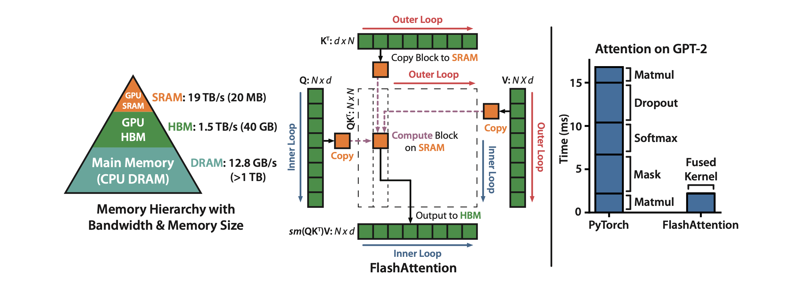

FlashAttention: Making Attention I/O-Aware
FlashAttention is the default attention implementation across the stack. Whether you are training or running inference on GPUs and whether using MHA/GQA/MLA variants, you are almost certainly running a variant of it.
Standard attention is memory-bound, i.e. it does not account for the GPU memory hierarchy, repeatedly shuffling large intermediate matrices between slow and fast GPU memory. FlashAttention addresses this by making attention IO-aware. It computes exact standard attention with the same numerical output but restructures the computation to minimize data movement between these memory levels. It does this through a combination of operator fusion, tiling, recomputation and a particularly elegant online softmax algorithm that computes softmax in a single pass without needing to see all the scores first. The result is faster and longer context length training and lower memory usage without approximation.
This post walks through the “why” behind each of these pieces along with a bit deeper discussion on online softmax derivation. I also plan to follow this up with blogs on implementing FlashAttention in pure PyTorch and as a fused Triton kernel to build a deeper hands-on understanding of these ideas.
The GPU Memory Hierarchy
It is helpful to have a basic understanding of GPU memory hierarchy before diving into FlashAttention. A GPU has two levels of memory that matter here:
HBM (High Bandwidth Memory): It is the GPU’s main (slow) memory which you see when you run
nvidia-smi. It sits off-compute chip. An A100 has about 80 GB of HBM with a bandwidth of ~2 TB/s.SRAM (Static RAM) is on-chip memory. A A100 has about ~20 MB total (spread across 108 SMs) with ~19 TB/s bandwidth. This is roughly 10x the bandwidth of HBM but nearly 4000x smaller in capacity.
These numbers scale with each generation: an H100 SXM has 80 GB HBM3 at 3.35 TB/s, a B200 pushes to 192 GB HBM3e at 8 TB/s but the SRAM-to-HBM bandwidth gap persists across all of them. The principles apply regardless of which GPU you are on.
Every GPU kernel (operation) must load its inputs from HBM into SRAM, do the computation and write results back to HBM. The key intuition: SRAM is where compute happens. HBM is where data lives.
Compute-bound vs. memory-bound operations
Given these two memory levels, the operations on GPU can either be compute-bound or memory-bound.
Compute-bound: An operation where the GPU’s compute cores are the bottleneck because they cannot do matmuls as fast as the data is fed. Typical examples are large matrix multiplications and convolutions ops.
Memory-bound: An operation where the GPU’s memory bandwidth is the bottleneck, leaving the compute cores sitting idle while they wait for data to arrive from main memory (HBM <-> SRAM). Examples include elementwise operations (eactivations, dropout) and reductions (sum, softmax, batch norm, layer norm).
The way to quantify this is arithmetic intensity: how many FLOPs the operation performs per byte it moves to/from HBM.
\[ \text{Arithmetic Intensity} = \frac{\text{FLOPs}}{\text{Bytes accessed from HBM}} \]
Every GPU has a theoretical arithmetic intensity where compute time and memory transfer time are exactly balanced. For an A100, this is \(\approx\) 156 FLOPs/byte. Operations above this threshold are compute-bound, operations below it are memory-bound. This framework is known as the roofline model.
Note, Horace He’s “Making Deep Learning Go Brrrr” is a great resource to understand this concept in detail. Also, remember a punchline from the blog, if an operation is memory-bound, making it faster is not about fewer FLOPs. It is about moving fewer bytes. This holds true for FlashAttention.
Standard Attention and Its IO Cost
Now that we have the memory hierarchy picture, we can revisit the standard attention and forward and backward pass implementation.
The attention formula
Standard scaled dot-product attention computes:
\[ O = \text{softmax}\!\left(\frac{QK^T}{\sqrt{d}}\right) V \]
where \(Q, K, V \in \mathbb{R}^{N \times d}\), \(N\) is the sequence length and \(d\) is the head dimension. This is for a single attention head, multi-head attention just runs this independently across heads. Note, I am ignoring masking and dropout here to keep the IO analysis clean, they do not change the fundamental bottleneck.
The formula looks like one operation but in practice PyTorch executes it as a sequence of separate GPU kernels. Each kernel reads its inputs from HBM, does its computation in SRAM and writes the results back to HBM. Then the next kernel reads those results from HBM again.
Standard forward pass
Algorithm: Standard Attention Forward
Require: \(Q, K, V \in \mathbb{R}^{N \times d}\) in HBM.
- Load \(Q, K\) from HBM, compute \(S = QK^T\), write \(S\) to HBM.
- Read \(S\) from HBM, compute \(P = \text{softmax}(S)\), write \(P\) to HBM.
- Load \(P\) and \(V\) from HBM, compute \(O = PV\), write \(O\) to HBM.
- Return \(O\).
We have 3 separate kernels and 3 HBM round-trips! The \(N \times N\) attention matrix is read and written multiple times. Here, total HBM IO is ~\(O(N^2)\) dominated by sequence length (\(N\)).
Standard backward pass
Algorithm: Standard Attention Backward
Require: \(Q, K, V, dO \in \mathbb{R}^{N \times d}\), \(P \in \mathbb{R}^{N \times N}\) in HBM.
- Load \(P, dO\), compute \(dV = P^T dO\), write \(dV\) to HBM.
- Load \(dO, V\), compute \(dP = dO V^T\), write \(dP\) to HBM.
- Read \(P, dP\), compute \(dS_{ij} = P_{ij}(dP_{ij} - \sum_l P_{il} dP_{il})\), write \(dS\) to HBM.
- Load \(dS\) and \(K\), compute \(dQ = dS K\), write \(dQ\) to HBM.
- Load \(dS\) and \(Q\), compute \(dK = dS^T Q\), write \(dK\) to HBM.
- Return \(dQ, dK, dV\).
Here, we even have more HBM traffic with the backward pass reads and writes multiple \(N \times N\) intermediates (\(P\), \(dP\), \(dS\)), giving \(O(N^2)\) IO again.
The two problems
Looking at these algorithms, there are two issues:
Problem 1: Multiple HBM round-trips. Every step shuffles \(N \times N\) matrices between HBM and SRAM. As a result, your standard attention is dominated by comparatively slow HBM accesses while the compute cores sit idle waiting for data to arrive.
Problem 2: \(O(N^2)\) activation memory. The forward pass must save \(P\) (\(N \times N\)) per head per layer for backpropagation. This not only creates extra HBM traffic but also consumes a lot of GPU memory especially for long sequences.
Standard attention implementation is memory-bound and not “IO-AWARE”! The \(N \times N\) matrices are repeatedly read and write in HBM during both forward and backward passes.
What FlashAttention Does
FlashAttention is an IO-aware, exact attention algorithm. It computes the same output as standard attention but it never materializes the \(N \times N\) attention matrix in HBM. The total HBM IO drops from \(O(N^2)\) to \(O(N^2 d^2 / M)\), where \(M\) is the SRAM size per SM. For typical values of \(d\) and \(M\), this is dramatically less than \(O(N^2)\).
The algorithm achieves this through five interdependent fixes:
- Operator fusion: run the entire attention computation (matmul, softmax, matmul) in a single kernel so intermediates stay in SRAM.
- Tiling: partition \(Q\), \(K\), \(V\) into blocks that fit in SRAM, processing one block at a time.
- Recomputation: do not store the \(N \times N\) probability matrix \(P\). Recompute it from \(Q\), \(K\), and a tiny normalization constant during the backward pass.
- Online softmax: compute softmax incrementally across tiles using running statistics so that tiling produces the exact result without ever seeing the full row.
- The logsumexp value \(L\): a single scalar per query row that encodes everything needed to recover \(P\) during the backward pass.
These fixes are not independent. Fusion needs tiling (intermediates are too large for SRAM otherwise). Tiling needs online softmax (softmax is not directly associative). Recomputation needs \(L\) (the backward pass must recover \(P\) without storing it). I will walk through each fix in turn, building up the complete algorithm.

Left: GPU memory hierarchy. Center: FlashAttention tiled computation with Q, K, V blocks loaded into SRAM. Right: FlashAttention fuses all attention ops into a single kernel, eliminating separate HBM round-trips. (Source: Dao et al., 2022)
Operator Fusion
As shown above, standard attention launches three separate GPU kernels, each writing \(N \times N\) intermediates to HBM. For instance, the softmax step is especially wasteful, it does very little arithmetic per element but reads and writes the entire attention matrix. The compute cores sit almost entirely idle waiting for data.
The most common approach to accelerate memory-bound operations is kernel fusion: if there are multiple operations applied to the same input, the input can be loaded once from HBM instead of multiple times for each operation.
Often, compilers (e.g. PyTorch’s torch.compile) can automatically fuse operations but they are not always able to fuse complex operations like matmul + softmax in attention as it requires domain specific knowledge about how to tile and reorder the computation. FlashAttention is a hand-crafted fused kernel that exploits the specific structure of attention.
Fusion alone is not enough. For it to actually deliver the speedups we want two independent problems need to be solved:
The intermediates must fit in SRAM. Even a single block of query rows scored against all \(N\) keys produces a score matrix that exceeds SRAM capacity, and this only gets worse as \(N\) grows. We need a way to break the computation into pieces that fit. That is tiling (next section).
We need to avoid storing \(P\) for the backward pass. Even if we fuse the forward pass perfectly, backpropagation requires the \(P\) matrix to be saved in HBM for gradient computation. This reintroduces the \(O(N^2)\) memory cost we are trying to eliminate. The fix is recomputation.
Tiling
As mentioned above the full \(N \times N\) attention matrix does not fit in SRAM. Moreover, we do not need to hold it all at once. The attention computation does not require the full matrix to be in memory simultaneously. The output \(O\) can be computed tile by tile. This ensures all intermediate values stays in SRAM and only touch HBM at the start (to read \(Q\), \(K\), \(V\)) and at the end (to write \(O\)).
We partition \(Q\) into row blocks and \(K\), \(V\) into column blocks. For each query block, we loop over all key/value blocks, compute a small score tile that fits in SRAM, apply softmax, multiply by the value block, and accumulate into an output block that also stays in SRAM. The block sizes are chosen so that all the tiles (query, key, value, score, output) fit in SRAM simultaneously.
The key point is that the full \(N \times N\) attention matrix is never materialized, neither in HBM nor in SRAM. The HBM IO cost of the tiled algorithm is \(\text{IO cost} \approx O(Nd)\) instead of \(O(N^2)\) for vanilla attention.
The Softmax Problem
There is a subtlety that makes tiling attention fundamentally harder than tiling a standard matrix multiplication. For matmul, tiling works because addition is associative: the partial products from each tile can simply be summed. But attention has a softmax sandwiched between two matmuls and softmax is not directly associative across tiles. Softmax for each query row needs the global maximum (\(m\)) and global denominator (\(l\)) over all keys. If we are processing key tiles one at a time, we do not know these global statistics until we have seen every tile. The online softmax algorithm (discussed later) solves this problem.
Recomputation
Tiling eliminates the \(N \times N\) matrix from the forward pass. However, the gradient computation requires the probability matrix \(P\) (see the backward algorithm above). If we store \(P\) for the backward pass, we reintroduce \(O(N^2)\) memory per head which is exactly the cost we just eliminated.
FlashAttention makes a deliberate choice: do not store \(P\), recompute it during the backward pass from the saved \(Q\), \(K\), and \(V\) tiles.
This trades memory for compute. Since, standard attention is memory-bound, the additional compute is small in comparison. You need one extra forward pass over the \(QK^T\) tiles per backward pass. Since the backward pass already has to load \(Q\), \(K\), and \(V\) from HBM, recomputation adds no extra HBM reads. The memory savings are enormous. Thus, we only need to store \(Q\), \(K\), \(V\), \(O\) (all \(O(Nd)\)) and one additional scalar \(L\).
In practice, FlashAttention backward pass is faster than standard attention despite doing more FLOPs, because it eliminates the massive HBM reads and writes of \(P\) (remember FlashAttention is memory-bound!). This is the same principle as gradient checkpointing but applied surgically to a single intermediate rather than at the coarse granularity of entire layers.
Online Softmax
As hinted before, tiling works naturally for matmul because addition is associative. But attention has a softmax sandwiched between two matmuls and softmax needs two global statistics the row maximum \(m\) and the denominator \(l\) before any output can be produced. The numerically stable (“safe”) softmax for a row \(x = (x_1, \ldots, x_N)\) is:
\[ \text{softmax}(x)_i = \frac{e^{x_i - m}}{\sum_{j=1}^{N} e^{x_j - m}}, \quad m = \max_{j=1}^{N} x_j \]
Computing this requires three sequential passes over the data (Milakov & Gimelshein, 2018):
- Pass 1 sweeps for the max \(m_N\)
- Pass 2 uses \(m_N\) to accumulate the denominator \(\ell_N = \sum_j e^{x_j - m_N}\)
- Pass 3 uses both to emit the final values \(a_i = e^{x_i - m_N}/\ell_N\).
Each pass depends on the result of the previous one. If the full row of logits does not fit in SRAM (which it generally does not for long sequences), each pass must re-read \(Q\) and \(K\) from HBM to recompute logits on the fly. This causes three passes, three HBM round-trips!
3 passes to 2: the surrogate denominator
The denominator update \(\ell_i = \ell_{i-1} + e^{x_i - m_N}\) depends on the final max \(m_N\) which blocks fusion with the max pass. The trick (Milakov & Gimelshein, 2018) is to define a surrogate denominator that uses the running max \(m_i\) instead:
\[ \ell_i := \sum_{j=1}^{i} e^{x_j - m_i} \]
At position \(N\) the running max equals the final max, so the surrogate \(\ell_N\) equals the true denominator. If we can update \(\ell_i\) incrementally, we get the final denominator for free.
Start from the definition and split off the \(i\)-th term:
\[ \ell_i = \left(\sum_{j=1}^{i-1} e^{x_j - m_i}\right) + e^{x_i - m_i} \]
The key move is to relate each \(e^{x_j - m_i}\) in the sum to \(e^{x_j - m_{i-1}}\) (which is what \(\ell_{i-1}\) uses) by factoring out \(e^{m_{i-1} - m_i}\):
\[ \ell_i = \underbrace{\left(\sum_{j=1}^{i-1} e^{x_j - m_{i-1}}\right)}_{\ell_{i-1}} \cdot\; e^{m_{i-1} - m_i} \;+\; e^{x_i - m_i} \]
\[ \boxed{\ell_i = \ell_{i-1} \cdot e^{m_{i-1} - m_i} + e^{x_i - m_i}} \]
Everything on the right is available at step \(i\) with no dependency on the future. This fuses the max and denominator into a single pass, reducing 3 passes to 2.
2 passes to 1: the surrogate output
In attention, our final target is not the attention score matrix but the output matrix \(O\) or more specifically \(O = A \cdot V\) which still requires a second sweep. The same surrogate trick eliminates it, you define a surrogate output \(o'_i\) using the running statistics \(m_i\) and \(\ell_i\) instead of the final ones. Applying the identical factor and rescale algebra yields:
\[ \boxed{o'_i = o'_{i-1} \cdot \frac{\ell_{i-1} \cdot e^{m_{i-1} - m_i}}{\ell_i} + \frac{e^{x_i - m_i}}{\ell_i} \cdot V[i, :]} \]
At position \(N\), the running statistics equal the final statistics, so \(o'_N\) equals the true output \(o_N\). The online update is not an approximation. It produces the same result as computing softmax over the full row.
In practice, FlashAttention track \(m\) and \(\ell\) as scalar registers in SRAM, updated once per key tile per query tile.
I would recommend reading these excellent notes “From online softmax to flash attention” to understand all the derivations in more detail.
The Logsumexp Value L
At the end of the forward pass, the online softmax loop has produced the final row maximum \(m_i\) and denominator \(\ell_i\) for each query row \(i\). FlashAttention-2 compresses these two scalars into a single value, the logsumexp value:
\[ L_i = m_i + \log \ell_i = \log\!\left(\sum_j e^{S_{ij}}\right) \]
\(L_i\) is the log of the softmax partition function for row \(i\), one scalar per query row and can be used to compute the \(P\) as follows:
\[ P_{ij} = e^{S_{ij} - L_i} \]
This ensures we don’t need to store the \(P\) during the forward pass. Together with \(Q, K, V, O\) and \(L\), we have everything we need to compute the backward pass.
FlashAttention-2 also introduces other parallelization and loop order engineering efficiencies which I would discuss in later blogs, for now I have focused on the core conceptual improvements that are part of FlashAttention algorithm.
Wrapping Up
The core insight behind FlashAttention is not about clever matmul tricks. It is about bytes and minimizing the data movement. Standard attention is slow because it moves too much data through the memory bus: the \(N \times N\) attention matrix gets written to and read from HBM multiple times across three separate kernel launches.
The five fixes of FlashAttention addresses that bottleneck systematically:
- Operator fusion eliminates HBM round-trips by running the entire attention computation in a single kernel.
- Tiling breaks the computation into SRAM-sized blocks so that fusion is actually possible.
- Recomputation removes the need to store the \(N \times N\) probability matrix \(P\), trading cheap extra compute for a massive reduction in activation memory.
- Online softmax makes tiling exact by maintaining running statistics that converge to the correct answer in a single pass.
- The logsumexp value \(L\) bridges the forward and backward passes, compressing everything needed to recover \(P\) into one scalar per query row.
The result is an attention algorithm with the same numerical output, dramatically less HBM IO and less memory. It is faster despite doing slightly more work because the bottleneck is memory, not compute.
References
Papers
- FlashAttention: Fast and Memory-Efficient Exact Attention with IO-Awareness: The original FlashAttention paper
- FlashAttention-2: Faster Attention with Better Parallelism and Work Partitioning: FlashAttention-2 paper that improves upon the original FlashAttention using better parallelism and work partitioning
- Online Normalizer Calculation for Softmax: Original derivation of the online softmax recurrence
- From Online Softmax to FlashAttention: Excellent notes bridging online softmax to FlashAttention
Blogs
- Making Deep Learning Go Brrrr From First Principles: A must read to understand memory-bound vs compute-bound workloads
- ELI5: FlashAttention: Accessible conceptual explanation of FlashAttention
- Modal GPU Performance Glossary: dictionary of terms and concepts related to programming GPUs